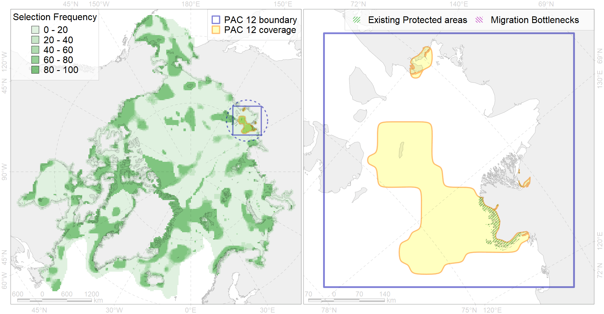

Region 12
Region 12
“ArcNet” scenario 33 achievement for region 12.
Use Accenter for advanced mode.

1
CFs inside of Region completely
5
CFs inside of Region at quarter
8
Complete-targets achievement by Region
16
Half-targets achievement by Region
| CF | Name | Target Achievement for Region | Proportion of Target Achievement in Region | Amount Proportion in Region |
|---|---|---|---|---|
| 7244 | Laptev Sea kelp patches (22,23) | 331.7% | 100.0% | 100.0% |
| 7008 | Central Laptev area of increased benthic biomass | 95.1% | 94.7% | 72.9% |
| 3112 | polynya Laptev E | 151.4% | 46.8% | 31.4% |
| 8023 | Laptev Sea estuaries | 109.2% | 95.2% | 31.3% |
| 8034 | Salt marshes of the Laptev Sea LME | 76.8% | 75.0% | 26.1% |
| 4095 | Estuarian (Taymyr-Lena) brackish –water fish complex; | 352.4% | 72.2% | 23.6% |
| 1014 | Laptev Walrus Whelping patches | 88.5% | 37.8% | 22.5% |
| 6080 | Thick-billed murre (Uria lomvia eleonorae) breeding colonies | 40.7% | 28.0% | 22.2% |
| 4061 | Feeding/nursery area of the Siberian sturgeon (Acipenser baerii) (F4) | 44.9% | 44.8% | 19.1% |
| 7114 | II.1.1.8. Laptev inner shelf | 230.4% | 51.9% | 17.8% |
| 7113 | II.1.1.7. Laptev shelf coastal domain | 109.7% | 59.7% | 17.2% |
| 6104 | 6104 Urilomvieleonorae breeding colonies | 40.3% | 22.8% | 16.9% |
| 8027 | intertidal zone of the Laptev Sea LME | 63.8% | 56.6% | 16.1% |
| 7115 | II.1.1.9. Laptev middle shelf | 91.8% | 49.4% | 15.1% |
| 3028 | Marginal Ice Zone distribution in April in the Laptev Sea LME | 104.2% | 17.7% | 12.6% |
| 3008 | Fast ice distribution in the Eastern part of the Laptev Sea and the East-Siberian Sea | 154.4% | 33.2% | 10.7% |
| 2013 | Bearded seal whelping areas in the Laptev Sea | 38.2% | 18.0% | 9.3% |
| 3039 | Marginal Ice Zone distribution in July in the Laptev Sea LME | 32.0% | 27.4% | 8.8% |
| 4036 | Distribution of the Borisov’s Arctic cod (Arctogadus borisovi) (F33) | 58.1% | 25.6% | 8.6% |
| 7035 | Siberian shelf region | 89.3% | 25.5% | 8.6% |
| 1013 | Laptev Walrus haulouts | 9.5% | 9.1% | 8.6% |
| 6011 | Brent goose (Branta bernicla nigricans) Asian breeding&moulting grounds | 28.0% | 10.3% | 5.5% |
| 6045 | Stellers eider (Polysticta stelleri) Pacific moulting&migration stopovers | 9.3% | 8.6% | 5.0% |
| 4077 | Fish zoogeography, Arctic Region, High-Arctic Shelf Province, Laptev – East-Siberian District (10D) | 36.7% | 19.4% | 5.0% |
| 4008 | Feeding / nursery area of the Arctic Cisco (Coregonus autumnalis), Eurasian populations (F 14) | 9.2% | 8.6% | 4.0% |
| 4010 | Feeding area of the Muksun (Coregonus muksun) (F 15) | 11.1% | 10.9% | 3.8% |
| 6006 | Brent goose (Branta bernicla bernicla) breeding&moulting grounds | 18.8% | 5.9% | 3.6% |
| 6100 | 6100 Risstridactylpollicarius breeding colonies | 4.4% | 4.4% | 3.3% |
| 6073 | King eider (Somateria spectabilis) Pacific moulting&migration stopovers | 6.4% | 5.6% | 3.2% |
| 4015 | Feeding area of the Broad whitefish (Coregonus nasus), American populations (F 19) | 8.9% | 7.6% | 3.1% |
| 4024 | Distribution of the Chum Salmon (Oncorhynchus keta) (F24) | 48.5% | 5.7% | 3.1% |
| 6030 | Glaucous gull (Larus hyperboreus pallidissimus) breeding grounds | 24.6% | 4.1% | 3.0% |
| 4014 | Feeding area of the Siberian whitefish (Coregonus pidschian) (F 18) | 9.7% | 6.1% | 2.5% |
| 5007 | Beluga of the Barents-Kara-Laptev Sea stock general distribution | 8.9% | 5.9% | 2.4% |
| 4021 | Feeding area of the Inconnu (Stenodus leucichthys nelma), Euro-Asian populations (F 22) | 6.9% | 5.8% | 2.4% |
| 9012 | polar bear of the LV (Laptev Sea) subpopulation distribution | 8.0% | 6.6% | 2.4% |
| 9030 | polar bear denning areas of LV (Laptev Sea) subpopulation | 3.7% | 3.7% | 2.2% |
| 4018 | Feeding area of the Vendace, Least cisco (Coregonus sardinellа), Euro-Asian populations (F 20) | 8.1% | 4.3% | 2.1% |
| 4052 | Range of the Fourhorn Sculpin (Myoxocephalus quadricornis) (F 45), American populations | 62.1% | 4.3% | 2.0% |
| 4030 | Feeding area of the Arctic charr (Salvelinus alpinus), anadromous populations (F28) | 4.2% | 3.7% | 1.9% |
| 6066 | Common eider (Somateria mollissima v-nigrum) breeding&moulting grounds | 3.6% | 3.5% | 1.4% |
| 4037 | Distribution of the Glacial cod (Arctogadus glacialis) (F34) | 12.9% | 3.1% | 1.3% |
| 6048 | Black-legged kittiwake (Rissa tridactyla tridactyla) breeding colonies | 1.8% | 1.3% | 1.2% |
| 7026 | Eurasian shelf region | 12.4% | 5.1% | 1.2% |
| 5090 | Narwhal in the Russian Arctic assumed summer range | 8.3% | 4.8% | 1.1% |
| 4058 | Range of the Arctic flounder (Liopsetta glacialis) (F48) | 14.5% | 1.9% | 1.0% |
| 4070 | Local forms of the White-Sea herring (Clupea pallasii) (F8) | 3.5% | 2.0% | 0.9% |
| 4023 | Feeding/migration area of the Pink Salmon (Oncorhynchus gorbuscha), native distribution (F23) | 9.8% | 1.5% | 0.7% |
| 4006 | Feeding/nursery area of the Pacific rainbow smelt (Osmerus dentex) (F12) | 2.6% | 1.0% | 0.5% |
| 6028 | Glaucous gull (Larus hyperboreus hyperboreus) breeding grounds | 4.4% | 0.7% | 0.5% |
| 4041 | Range of the Polar Cod (Boreogadus saida) (F35) | 3.9% | 1.5% | 0.5% |
| 4004 | Range of the Pacific Capelin (Mallotus villosus catervarius) (F11) | 14.8% | 1.1% | 0.5% |
| 5112 | Arctic Cetaceans (beluga, bowhead, narwhal) winter habitats as predicterd by MIZ | 0.6% | 0.5% | 0.3% |
| 6015 | Black guillemot (Cepphus grylle mandti) breeding grounds | 1.2% | 0.2% | 0.1% |
| 4042 | Range of the Saffron cod (Eleginus gracilis) (F 36) | 1.4% | 0.2% | 0.1% |
| 3057 | Multiyear Ice distribution in September in the Laptev Sea LME | 0.1% | 0.0% | 0.0% |